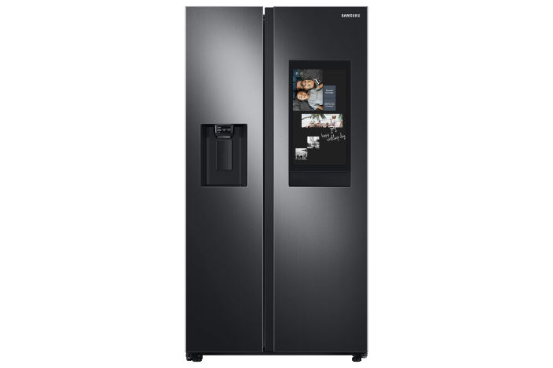

Nevecón inverter auto defrost Eectrolux ERSA44V3HVG silver con freezer 442L 115V

$ 4.899.900
Hasta 48 cuotas
Envio gratis a todo el pais
conoce los tiempos y las formas de pago
Lo que tienes que saber de este producto
- Tipo de deshielo: auto desfrost.
- Capacidad de 442 litros.
- Con freezer side by side.
- Con iluminación interior.
- Dimensiones: 910 mm de ancho, 1780 mm de alto 7 590 mm de profundidad.
- Cuenta con porta huevos.
Caracteristicas de Electrolux ERSA44V3HVG (Incluye:Con tecnologia inverter)
- Dimensiones: 910mm x 590mm x 1780mm
- Capacidad de heladera: 291 L
- Capacidad del freezer: 151 L
- Con tecnologia inverter: SI
- Tipo de deshielo: Auto defrost
- Eficiencia energetica: A
- Producto con impacto positivo: SI